计算机网络-第3章 运输层
3.5 面向连接的运输：TCP
3.5.1 TCP连接
TCP被称为是面向连接的，这是因为，在一个应用进程可以向另一个应用进程发送数据之前，这两个进程必须先相互握手，即必须相互发送某些预备报文段，以建立确保数据传输的参数。作为TCP连接建立的一部分，连接的双方都将初始化与TCP连接相关的许多TCP状态变量。
TCP连接提供的是全双工服务：如果一台主机上的进程A与另一台主机上的进程B存在一条TCP连接，那么应用层数据可在从B流向A的同时，也从A流向B。
TCP连接也总是点对点的，即在单个发送方与单个接收方之间的连接。对TCP而言，两台主机是一对。
三次握手：客户首先发送一个特殊的TCP报文段，服务器用另一个特殊的TCP报文段来响应，最后客户再用第三个特殊报文段作为响应。前两个报文段不承载有效载荷，即不包含应用层数据，第三个报文段可以承载有效载荷。
一旦建立起一条TCP连接，两个应用进程就可以相互发送数据了。客户进程通过套接字传递数据流，数据一旦通过套接字，就由客户中运行的TCP控制了。
TCP将这些数据引导到该连接的发送缓存里，发送缓存是三次握手期间设置的缓存之一。接下来TCP就会不时从缓存里取出一块数据，传递到网络层。TCP可以取出并放入报文段中的数据数量受限于最大报文段长度MSS。MSS根据最初确定的由本地发送主机发送端的最大链路层帧长度（最大传输单元MTU）来设置。设置该MSS要保证一个TCP报文段加上TCP/IP首部长度，MSS典型值为1460字节。
MSS是指在报文段里应用层数据的最大长度，而不是指包括首部的TCP报文段的最大长度。
TCP为每块客户数据配上一个TCP首部，从而形成多个TCP报文段。
3.5.2 TCP报文段结构
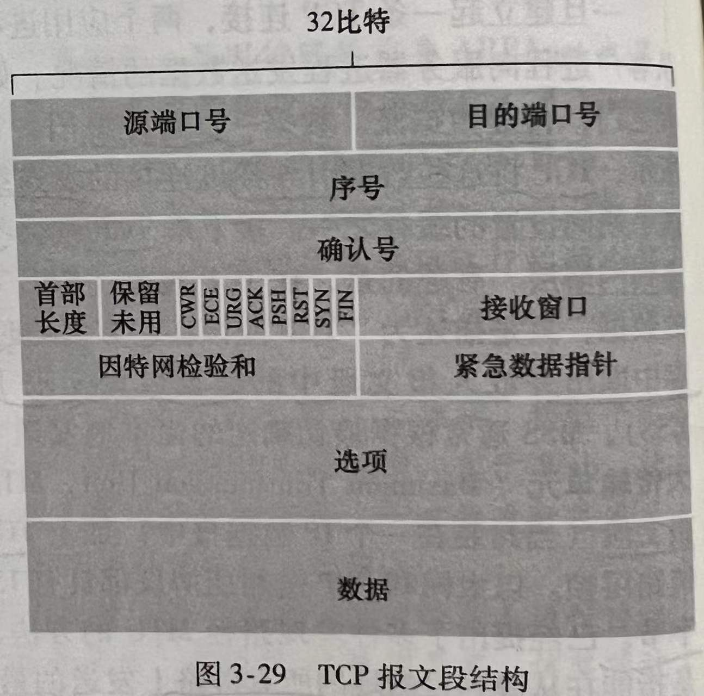
TCP报文段由首部字段和一个数据字段组成。
数据字段中包含一块应用数据，MSS限制了报文段数据字段的最大长度。当TCP发送一个大文件，TCP通常将该文件划分成长度为MSS的若干块。
3.5.2.1 序号和确认号
- 序号
TCP报文段首部中两个最重要的字段是序号字段和确认号字段，是TCP可靠数据传输服务的关键部分。
TCP把数据看成一个无结构的、有序的字节流。一个报文段的序号是该报文段首字节的字节流编号。
举例来说，主机A上的一个进程想通过一条TCP连接向主机B上的一个进程发送一个数据流，主机A的TCP将隐式地对数据流中的每一个字节编号。假定数据流由一个包含500000字节地文件组成，MSS为1000字节，数据流的首字节编号是0，该TCP将为该数据流构建500个报文段。
- 确认号
因为TCP是全双工的，主机A在向主机B发送数据的同时，也许也会接收来自B的数据。从B到达的每个报文段中都有一个序号用于从B流向A的数据。
A填充进报文段的确认号是A期望从B收到的下一字节的序号。
假设A已经收到了来自B的编号0~535的所有字节，同时打算发送一个报文段给B。A等待B的数据流中字节536及之后的所有字节，所以A在报文段的确认号字段中填上536。
再假设，A已经收到了来自B的包含0535的报文段，以及另一个包含9001000的报文段，但没有收到536~899的报文段，A为了重新构建B的数据流，仍在等待字节536。因此A到B的下一个报文段将在确认号字段中包含536。 因为TCP只确认该流中至第一个丢失字节为止的字节，所以TCP被称为提供累积确认。
3.5.2.2 往返时间的估计与超时
- 估计往返时间
报文段的样本RTT / SampleRTT就是从某报文段被发出到对该报文段的确认被收到之间的时间量。大多数TCP的实现仅在某个时刻做一次SampleRTT测量，而不是为每一个发送的报文段测量一个SampleRTT。
也就是说，在任意时刻，仅为一个已发送但未被确认的报文段估计SampleRTT，从而产生一个接近每个RTT的新SampleRTT值。
TCP决不为已被重传的报文段计算SampleRTT。
SampleRTT值会随路由器的拥塞和端系统负载的变化波动，因此为了估计一个典型的RTT，要采取对SampleRTT取平均的方法。TCP维持一个SampleRTT均值称为EstimatedRTT，一旦获得一个新的SampleRTT，就根据以下公式更新EstimatedRTT：
EstimatedRtt = (1-a)* EstimatedRTT + a* SampleRTT （a的推荐值是0.125）
这种平均被称为指数加权移动平均EWMA。
RTT偏差：DevRTT用于估算SampleRTT一般会偏离EstimatedRTT的程度：
DevRTT = (1-b)* DevRTT + b* |SampleRTT - EstimatedRTT|（b的推荐值是0.25）
DevRTT是SampleRTT和EstimatedRTT之间差值的EWMA。如果SampleRTT波动小，则DevRTT小，反之亦然。
- 设置和管理重传超时间隔
超时间隔应该大于等于EstimatedRTT，否则造成不必要的重传，但也不能大太多，否则会导致数据传输时延大。
因此超时间隔设为EstimatedRTT加上一定余量，波动大时，余量应大些，波动小时，余量小些。
TimeoutInterval = EstimatedRTT + 4* DevRTT
推荐的初始TimeoutInterval为1秒。出现超时后，TimeoutInterval值将加倍。只要收到报文段并更新EstimatedRTT，将按上述公式再次计算TimeoutInterval。
3.5.3 可靠数据传输
- 超时间隔加倍
假设当定时器第一次过期时，与最早的未被确认的报文段相关联的TimeoutInterval是0.75秒。TCP会重传该报文段，并把新的过期时间设置为1.5秒。如果1.5秒后定时器又过期了，则TCP再次重传该报文段，并把过期时间设置为3.0秒。因此，超时间隔在每次重传后呈指数型增长。
然而，当定时器在收到上层应用数据或收到ACK两个事件中任意一个中启动时，TimeoutInterval由最近的EstimatedRTT值与DevRTT值推算得到。
- 快速重传
超时触发重传存在的问题之一就是超时周期可能相对较长，增加了端到端时延。
发送方可在超时事件发生之前通过注意冗余ACK来检测丢包的情况。
冗余ACK就是再次确认某个报文段的ACK，而发送方先前已经收到对该报文段的确认。
因为发送方经常一个接一个的发送大量报文段，如果一个报文段丢失，可能引起许多一个接一个的冗余ACK。如果TCP发送方接收到对相同数据的3个冗余ACK，TCP就执行快速重传，即在该报文段的定时器过期之前重传丢失的报文段。
- TCP的差错恢复机制最好被分类为GBN协议和SR协议的混合体。
3.5.4 流量控制
一条TCP连接的每一侧主机都为该连接设置了接收缓存。如果某应用程序读取数据时相对缓慢，而发送方发送的太快太多，就会使接收缓存溢出。
TCP为它的应用程序提供了流量控制服务以消除发送方使接收方缓存溢出的可能性。流量控制因此是一个速度匹配服务，即发送方的发送速率和接收方应用程序的读取速率相匹配。
流量控制和TCP的拥塞控制是针对完全不同的原因而采取的措施。
TCP通过让发送方维护一个称为接收窗口的变量来提供流量控制。接收窗口用于给发送方一个指示：该接收方还有多少可用的缓存空间。由于TCP是全双工通信，在连接两端的发送方都各自维护一个接收窗口。
假设A通过一条TCP连接向B发送一个大文件。
RcvBuffer代表B为该连接分配的接收缓存大小，LastByteRead代表B上的应用进程从缓存读出的数据流的最后一个字节的编号，LastByteRcvd代表已经放入B接收缓存中的数据流的最后一个字节的编号。
由于TCP不允许已分配的缓存溢出，下式必须成立：
LastByteRcvd - LastByteRead <= RcvBuffer
接收窗口用rwnd表示：
rwnd = RcvBuffer - [ LastByteRcvd - LastByteRead ]
rwnd是随时间变化的，是动态的。
连接是如何用变量rwnd来提供流量控制服务的呢？B通过把当前的rwnd值放入发给A的报文段接收窗口字段中，通知A，它的缓存还有多少可用空间。开始时，rwnd = RcvBuffer。
A跟踪两个变量：LastByteSent 和 LastByteAcked，两个变量之差就是A发送到连接中但未被确认的数据量，只要这个量控制在rwnd内，接收缓存就不会溢出。即必须保证：
LastByteSent - LastByteAcked <= rwnd
同时，TCP规范中要求，当B的接收窗口为0时，A继续发送只有一个字节数据的报文段，这些报文段将会被接收方确认，最终缓存将开始清空，并且确认报文里将包含一个非0的rwnd值。
UDP不提供流量控制，报文段由于缓存溢出可能在接收方丢失。
3.5.5 TCP连接管理
三次握手详解：
假设客户主机的一个进程想与服务器主机的一个进程建立一条连接。客户应用进程首先通知客户TCP，它想建立与服务器上某个进程之间的连接，客户中的TCP会用以下方式与服务器中的TCP建立一条TCP连接：
- 客户端的TCP首先向服务器端的TCP发送一个特殊的TCP报文段，该报文段中不包含应用层数据，但在报文段的首部中的一个标志位（即SYN比特）被设置为1，因此这个报文段被称为SYN报文段。另外，客户随机选择一个初始序号（client_isn），将此编号放置于该起始的TCP SYN报文段的序号字段中。该报文段被封装在一个IP数据报中发送给服务器。
- 一旦包含TCP SYN报文段的IP数据报到达服务器主机，服务器会从该数据报中提取出TCP SYN报文段，为该TCP连接分配TCP缓存和变量，并向客户TCP发送允许连接的报文段。这个允许连接的报文段也不包含应用层数据，但在其首部包含3个重要信息：1.SYN比特被设置为1；2.报文段首部的确认号字段被设置为client_isn + 1；3.服务器选择自己的初始序号（server_isn），将其放置到TCP报文段首部的序号字段中。该允许连接的报文被称为SYNACK报文段。
- 收到SYNACK报文段后，客户也要给该连接分配缓存和变量。客户主机向服务器发送另一个报文段，对服务器的允许连接的报文段进行确认（通过将值server_isn + 1放置到报文段首部的确认字段中来完成）。因为连接已经建立了，所以该SYN比特被设置为0。该阶段可以在报文段负载中携带客户到服务器的数据。
一旦完成了三次握手，客户和服务器主机就可以相互发送包括数据的报文段了，以后每一个报文段中，SYN比特都被设置为0。
关闭一条TCP连接：
参与一条TCP连接的两个进程中的任一个都能终止该连接，连接结束后，主机中的资源将被释放。
假设某客户打算关闭连接，客户应用进程发出一个关闭连接命令。这会引起客户TCP向服务器进程发送一个特殊的TCP报文段，这个报文段让其首部的一个标志位（FIN比特）被设置为1。当服务器收到该报文段后，向发送方回送一个确认报文段。然后服务器发送它自己的终止报文段，其FIN比特被设置为1。最后，该客户对这个服务器的终止报文段进行确认。此时，两台主机上用于该连接的所有资源都被释放了。
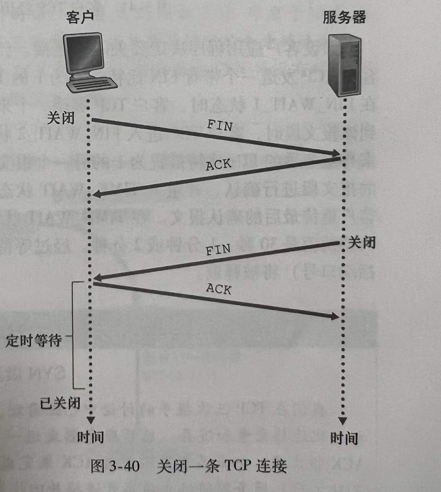
在一个TCP连接的生命周期内，运行在每台主机中的TCP协议在各种TCP状态之间变迁。
客户TCP经历的典型的TCP状态序列
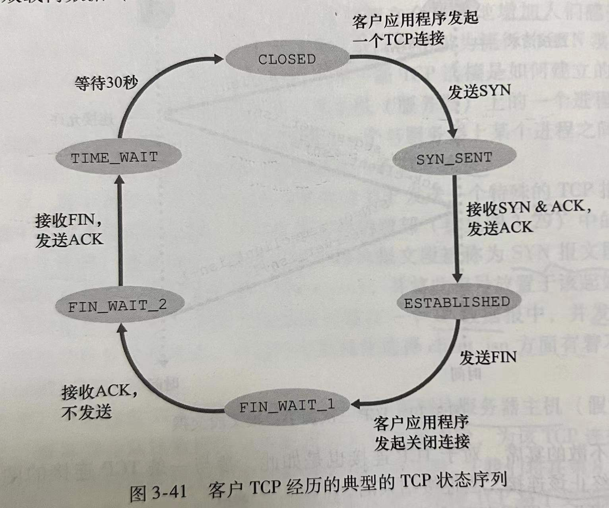
服务器端TCP经历的典型的TCP状态序列
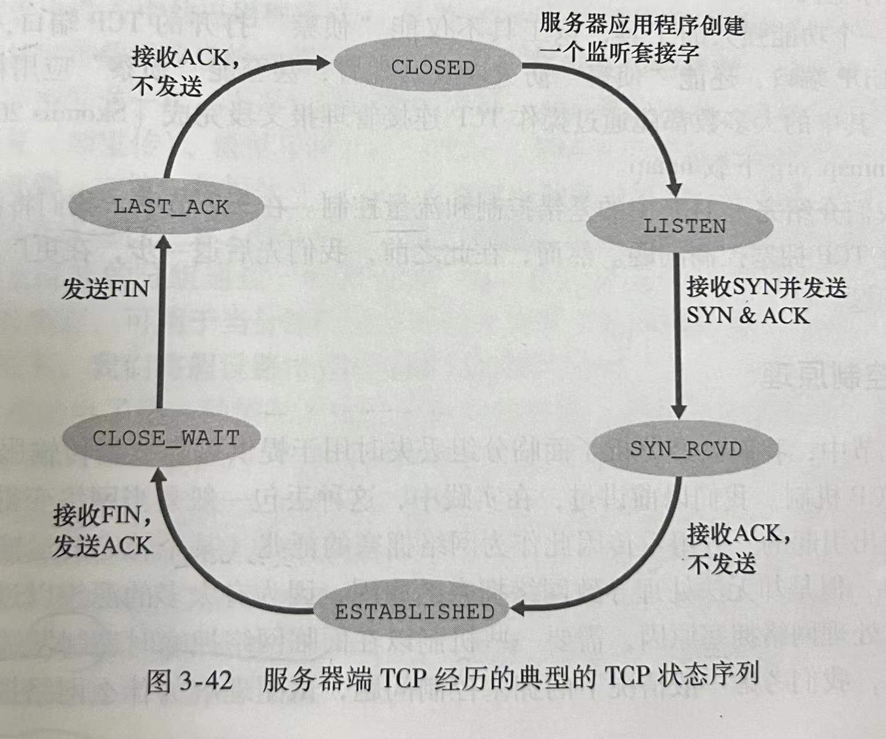
考虑当一台主机接收到一个TCP报文段，其端口号或源IP地址与该主机上进行中的套接字不匹配的情况：
假如一台主机接收了具有目的端口80的一个TCP SYN分组，但该主机在端口80不接受连接（即它不在端口80上运行web服务器），则该主机向源发送一个特殊重置报文段，该TCP报文段将RST标志位设置为1。
3.6 拥塞控制原理
为了处理网络拥塞原因，需要一些机制以在面临网络拥塞时遏制发送方。
3.6.1 拥塞原因与代价
通过分析3个越来越复杂的情况，开始对拥塞控制的一般性研究。
3.6.1.1 两个发送方和一台具有无穷大缓存的路由器
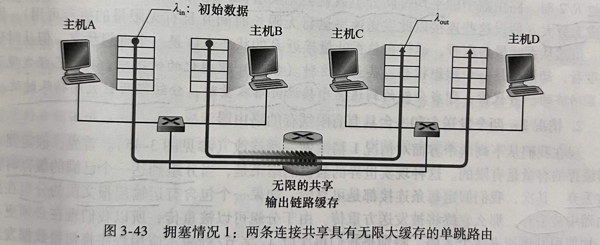
假设主机A中的应用程序以λin字节/秒的平均速率将数据发送到连接中，这些数据是初始数据。在这种情况下，A向路由器提供流量的速率是λin字节/秒，假设B也是以速率λin字节/秒发送数据。来自A和B的分组通过一台路由器，在一段容量为R的共享式输出链路上传输。
当发送速率在0~R/2之间时，接收方的吞吐量等于发送方的发送速率，即发送方发送的所有数据经有限时延后到达接收方。当发送速率超过R/2时，它的吞吐量只能达到R/2。这个吞吐量上限是由两条连接之间共享链路容量造成的。链路完全不能以超过R/2的稳定状态速率向接收方交付分组。无论A和B将其发送速率设置为多高，他们都不会看到超过R/2的吞吐量。
当发送速率接近R/2时，平均时延越来越大。当发送速率超过R/2，路由器中的平均排队分组数就会无限增长，源与目的地之间的平均时延也会变成无穷大。
从这种极端理想化的情况中，我们能发现拥塞网络的一种代价：当分组的到达速率接近链路容量时，分组经历巨大的排队时延。
3.6.1.2 两个发送方和一台具有有限缓存的路由器
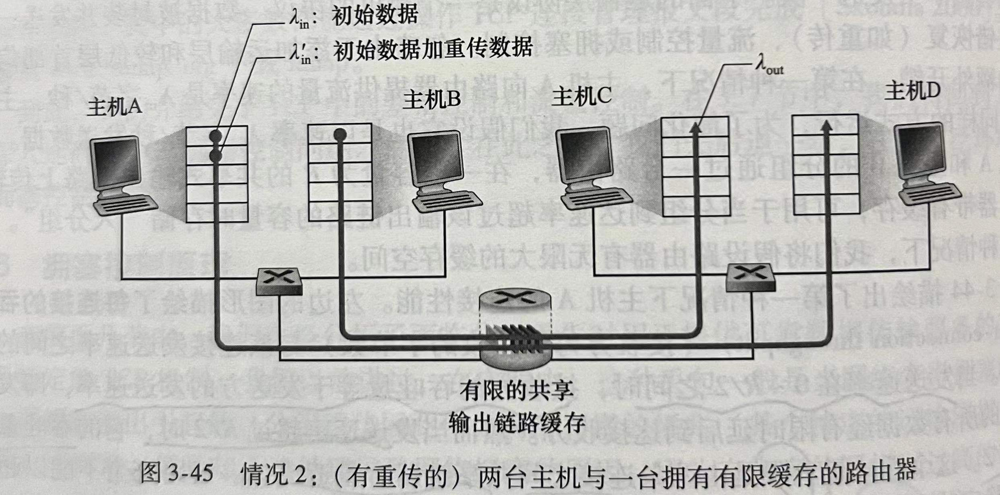
从两个方面对情况1做修改，首先，假定路由器缓存的容量是有限的，这会导致当分组到达一个已满的缓存时会被丢弃。其次，假定每条连接都是可靠的，这意味着丢失分组会被重传。
以λin字节/秒表示应用程序将初始数据发送到套接字中的速率，λ’in字节/秒表示运输层向网络中发送报文段的速率（就是发送初始数据和重传数据的速率），λ’in也被称为网络的供给载荷。
在这种情况下可以发现网络拥塞的两个代价：
发送方必须执行重传以补偿因缓存溢出的丢弃的分组。
发送方在遇到大时延时所进行的不必要重传会引起路由器利用其链路带宽来转发不必要的分组副本。
3.6.1.3 四个发送方和具有有限缓存的多台路由器及多跳路径
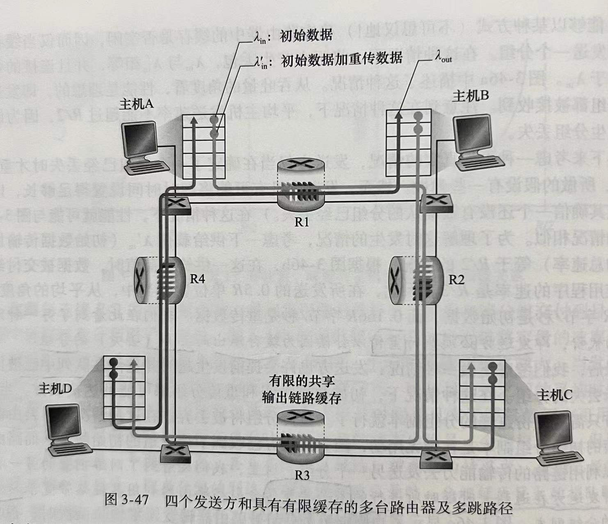
假设所有主机都有相同的λin值，所有路由器的链路容量都是R字节/秒。
分析λin值很大的情况（因为λin大，λ’in也会很大）：
不管λin的值有多大，到达路由器R2的A-C流量的到达速率至多是R，也就是R1到R2的链路容量。如果λ’in对于所有连接来说是极大的值，那么在R2上，B-D流量的到达速率可能会比A-C流量的到达速率大得多，因为A-C流量和B-D流量在R2上必须为有限缓存空间竞争，所以当来自B-D连接的供给载荷越来越大时，A-C连接上成功通过R2的流量会越来越小。在极限情况下，当供给载荷趋近于无穷大时，R2的空闲缓存会立即被B-D连接的分组占满，因而A-C连接在R2上的吞吐量趋近于0。
在此又看到由于拥塞而丢弃分组的另一种代价：当一个分组沿一条路径被丢弃时，每个上游路由器用于转发该分组到丢弃该分组而使用的传输容量最终被浪费掉了。
3.6.2 拥塞控制方法
在最为宽泛的级别上，根据网络层是否为运输层拥塞控制提供了显式帮助来区分拥塞控制方法：
端到端拥塞控制。在这种方法中，网络层没有为运输层拥塞控制提供显式支持。即使网络中存在拥塞，端系统也必须通过对网络行为的观察（如分组丢失与时延）来推断之。TCP采用端到端的方法解决拥塞控制，因为IP层不会向端系统提供有关网络拥塞的反馈信息。
网络辅助的拥塞控制。在这种方法中，路由器向发送方提供关于网络中拥塞状态的显式反馈信息。拥塞信息从网络反馈到发送方通常有两种方式：1.直接网络反馈，由路由器发送阻塞分组的形式发给发送方；2.经有接收方的网络反馈，路由器标记或更新从发送方流向接收方的分组中的某个字段来指示拥塞的产生，这种通知至少要经过一个完整的往返时间。
3.7 TCP拥塞控制
TCP采用的方法是让每一个发送方根据所感知到的网络拥塞程度来限制其能向连接发送流量的速率。
如果每一个TCP发送方感知从它到目的地之间的路径上没什么拥塞，则TCP发送方增加其发送速率；如果发送方感知沿着该路径有拥塞，则发送方就会降低其发送速率。
这种方法提出了三个问题：1.TCP发送方如何限制它向其连接发送流量的速率；2.TCP发送方如何感知从它到目的地之间的路径上存在拥塞；3.当发送方感知到端到端的拥塞时，采用何种算法来改变其发送速率。
- 首先分析TCP发送方如何限制向其连接发送流量的。
运行在发送方的TCP拥塞控制机制跟踪一个额外的变量：拥塞窗口（congestion window），表示为cwnd，它对一个TCP发送方能向网络中发送流量的速率进行了限制。特别是，在一个发送方中，为被确认的数据量不会超过cwnd与rwnd中的最小值，即：
LastByteSent - LastByteAcked <= min{cwnd,rwnd}
假设TCP接收缓存足够大，以至可以忽略接收窗口的限制，因此发送方中未被确认的数据量仅受限于cwnd，还假设发送方总是有数据要发送，即在拥塞窗口中的所有报文段要被发送。
这些约束限制了发送方中未被确认的数据量，因此间接限制了发送方的发送速率。为了理解这一点，我们考虑一个丢包和发送时延均可以忽略不计的连接。因此粗略的讲，在每个RTT的起始点，上面的限制条件允许发送方向该连接发送cwnd个字节的数据，在该RTT结束时发送方接收对数据的确认报文。
因此，该发送方的发送速率大概是cwnd/RTT 字节/秒。通过调节cwnd的值，发送方能调整它向连接发送数据的速率。
- 接下来考虑TCP发送方是如何感知路径上出现了拥塞的。
当出现过度的拥塞时，再沿着这条路径上的一台或多台路由器的缓存会溢出，引起一个数据报被丢弃。丢弃的数据报会引起发送方的丢包事件（要么超时，要么收到3个冗余ACK），发送方就认为在发送方到接收方的路径上出现了拥塞的指示。
- 考虑网络没有拥塞这种乐观的情况，即没有出现丢包事件的情况。
在这种情况下，TCP发送方将收到对于以前未确认报文段的确认，TCP将这些确认的到达作为一切正常的指示，即在网络上传输的报文段正被成功地交付给目的地，并使用确认来增加窗口的长度及其传输速率。
注意，如果确认以相当慢地速率到达（例如该端到端路径具有高时延或包含一段低带宽链路），则该拥塞窗口将以相当慢地速率增加；如果确认以高速率到达，则该拥塞窗口将会更迅速地增大。
因为TCP使用确认来触发（或计时）增大它的拥塞窗口长度，所以说TCP是自计时的。
TCP发送方如何确定它们的发送速率，既使得网络不会拥塞，同时又能充分利用带宽？TCP发送方是显式地协作，还是存在一种分布式方法使TCP发送方能仅基于本地信息设置它们的发送速率？TCP使用下列指导性原则回答这些问题：
- 一个丢失的报文段意味着拥塞，因此当丢失报文段时应降低TCP发送方的速率
- 一个确认的报文段指示该网络正在向接收方交付发送方的报文段，因此，当对先前未确认报文段的确认到达时，能够增加发送方的速率。
- 带宽探测。给定ACK指示源到目的地路径无拥塞，而丢包事件指示路径拥塞，TCP调节其传输速率的策略是增加其速率以响应到达的ACK，除非出现丢包事件，此时才减小传输速率。因此，为探测拥塞开始出现的速率，TCP发送方增加它的传输速率，从该速率后退，进而再次开始探测，看看拥塞开始速率是否发生变化。
接下来考虑TCP拥塞控制算法。
TCP拥塞控制算法包括3个主要部分：1.慢启动；2.拥塞避免；3.快速恢复。前两个是TCP的强制部分，快速恢复是推荐部分，但不是TCP发送方必需的。
- 慢启动
当一条TCP连接开始时，cwnd的值通常初始设置为1个MSS，这使得初始发送速率大约为MSS/RTT。对TCP发送方而言，可用带宽可能比MSS/RTT大得多，发送方希望迅速找到可用带宽的数量。
因此在慢启动状态，cwnd的值从1个MSS开始，并且每当传输的报文段首次被确认，就增加1个MSS。同时发出两个最大长度的报文段，这两个报文段被确认，则发送方对每个确认报文段将cwnd增加1个MSS，使得cwnd变为4个MSS，并不断重复这个过程。
每过一个RTT，发送速率就翻一番。因此，TCP发送速率起始慢，但在慢启动阶段以指数增长。
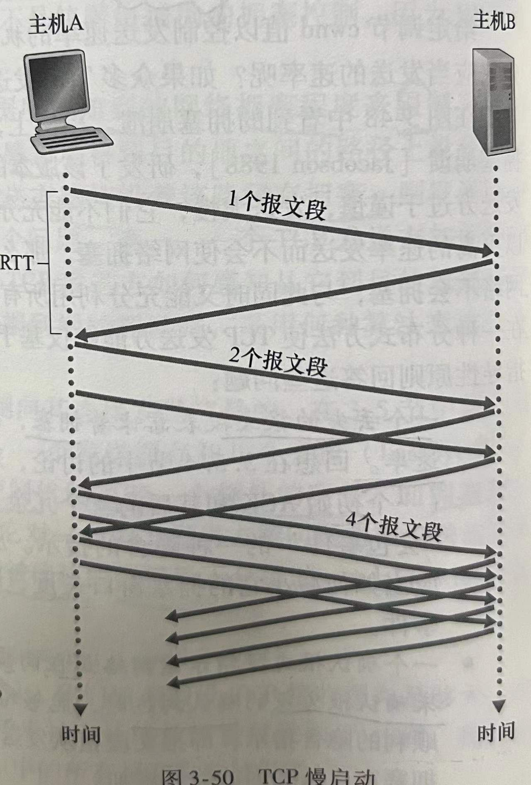
何时结束这种指数增长？有三种答案：
- 如果存在一个由超时指示的丢包事件，TCP发送方将cwnd设置为1个MSS并重新开始慢启动过程，还将ssthresh（慢启动阈值）设置为cwnd/2，即当检测到拥塞时，将ssthresh设置为拥塞窗口值的一半。
- 直接与ssthresh的值相关联。因为当速率到达或超过ssthresh时，继续使cwnd翻番可能太鲁莽。因此，当cwnd的值等于ssthresh时，结束慢启动，并且TCP转移到拥塞避免模式。
- 如果检测到3个冗余ACK，这时TCP执行快速重传，并进入快速恢复状态。
- 拥塞避免
一旦进入拥塞避免状态，cwnd的值大约是上次遇到拥塞时的值的一半，即距离拥塞并不远。因此，每个RTT只将cwnd的值增加1个MSS。一种通用的方法是，对于TCP发送方无论何时到达一个新的确认，就将cwnd增加一个MSS字节。例如，MSS是1460字节，cwnd是14600字节，则在一个RTT内发送10个报文段。每个到达ACK增加1/10MSS的cwnd，因此在收到对所有10个报文段的确认后，cwnd的值增加了1个MSS。
何时结束拥塞避免的线性增长？
当出现超时时，拥塞避免算法与慢启动一样，cwnd被设置为1个MSS。当丢包事件出现，ssthresh的值被更新为cwnd值的一半。
但是丢包事件也能由3个冗余ACK事件触发，在这种情况下，因为网络继续从发送方向接收方交付报文段，相比于超时指示的丢包，应当不那么剧烈。TCP将cwnd的值减半，并且当收到3个冗余ACK，将ssthresh记录为cwnd的一半。
- 快速恢复
在快速恢复中，对于引起TCP进入快速恢复状态的缺失报文段，对收到的每个冗余的ACK，cwnd的值增加一个MSS。最终，当对丢失报文段的一个ACK到达时，TCP在降低cwnd后进入拥塞避免状态。如果出现超时事件，快速恢复在执行如同慢启动和拥塞避免中相同的动作后，迁移到慢启动状态：丢包事件出现时，cwnd的值被设置为1个MSS，ssthresh被设置为cwnd的一半。
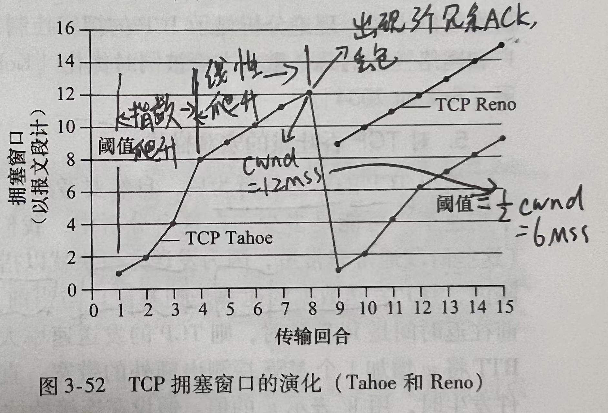
- 回顾TCP拥塞控制
忽略一条连接开始时初始的慢启动阶段，假定丢包由3个冗余ACK而不是超时指示，TCP拥塞控制是：每个RTT内cwnd线性（加性）增加1MSS，然后出现3个冗余ACK事件时cwnd减半（乘性减）。因此TCP拥塞控制被称为加性增，乘性减拥塞控制方式（AIMD）。
- 对TCP吞吐量的宏观描述
考虑一个长存活期的TCP连接的平均吞吐量（即平均速率）是多少。
忽略在超时事件出现后的慢启动阶段。在一个特定的往返间隔内，TCP发送数据的速率是拥塞窗口与当前RTT的函数。当cwnd是w字节，且当前往返时间是RTT秒，TCP的发送速率大约是w/RTT。于是，TCP通过每经过1个RTT将w增加1个MSS探测出额外的带宽，直到一个丢包事件发生为止。
当一个丢包事件发生时，用W表示w的值。假设在连接持续期间RTT和W几乎不变，那么TCP的传输速率在1/2(Ｗ/RTT)到W/RTT之间变化。
这些假设导出了TCP稳态行为的一个高度简化的宏观模型。当速率增长至W/RTT，网络丢弃来自连接的分组，然后发送速率减半，进而每过一个RTT就将发送速率增加MSS/RTT，直到再次达到W/RTT为止。这一过程不断重复。因为TCP吞吐量在两个极值之间线性增长，所以：
一条连接的平均吞吐量 = 0.75W/RTT （两个极值的平均值）
3.7.1 公平性
考虑K条连接，每条都有不同的端到端路径，但是都经过一段传输速率为R bps的瓶颈链路。假设每条连接都在传输一个大文件，而且无UDP流量通过该段瓶颈链路。如果每条连接的平均传输速率接近R/K，即每条连接都得到相同份额的链路带宽，则认为该拥塞控制机制是公平的。
对TCP的AIMD算法来说，考虑有两条TCP连接共享一段传输速率为R的链路的例子。
假设这两条连接有相同的MSS和RTT，这样如果它们有相同的cwnd长度，就会有相同的吞吐量。它们有大量的数据要发送，且没有其他TCP连接或UDP数据报穿越该共享链路，忽略TCP慢启动阶段。
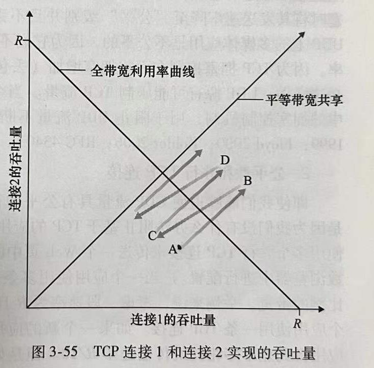
如图，描绘了两条TCP连接实现的吞吐量情况。如果TCP要在两条连接之间平等地共享链路带宽，那么实现的吞吐量曲线应该是从原点沿45°方向的箭头向外辐射。
理想的情况是两个吞吐量的和等于R。所以我们的目标应该是使取得的吞吐量落在平等带宽共享曲线和全带宽利用率曲线的交叉点附近的某处。
假定在某时刻，连接1和2实现了图中A点指明的吞吐量，因为两条连接共同消耗的链路带宽量小于R，所以无丢包事件发生，根据TCP拥塞避免算法，每过一个RTT，两条连接将其窗口增加1个MSS。因此，吞吐总量从A点沿45°前行。最终两条连接共同消耗的带宽超过R，导致分组丢失，连接1和2就按二分之一减小其窗口。所产生的结果实现了C点指明的吞吐量，然后就按上所述不断重复。
在实践中，这些假设通常得不到满足。C-S应用因此能获得非常不平等的链路带宽份额。特别是，已经表明当多条连接共享一个共同的瓶颈链路时，那些具有较小RTT的连接能够在链路空闲时更快地抢到可用带宽（即较快地打开其拥塞窗口），因而将比那些具有较大RTT的连接享用更高的吞吐量。
3.7.2 明确拥塞通告：网络辅助拥塞控制
明确拥塞通告（Explicit Congestion Notification / ECN）：该方案允许网络明确向TCP发送方和接收方发出拥塞信号。
在网络层，IP数据报首部的服务类型字段中的两个比特被用于ECN。
路由器所使用的一种ECN比特设置指示该路由器正在历经拥塞，该拥塞指示由被标记的IP数据报所携带，送给目的主机，再由目的主机通知发送主机。
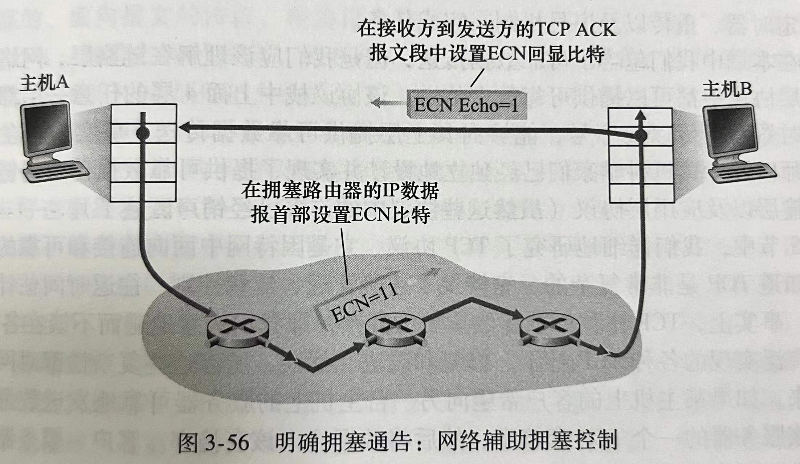
如图，当接收主机中的TCP通过一个接收到的数据报收到了一个ECN拥塞指示时，通过在接收方到发送方的TCP ACK报文段中设置ECE（ECN Echo）比特，通知发送主机中的TCP收到拥塞指示。接下来，TCP发送方通过减半拥塞窗口对一个具有ECE的ACK做出反应，并在下一个传输的TCP发送方到接收方的报文段首部中对CWR（拥塞窗口缩减）比特进行设置。